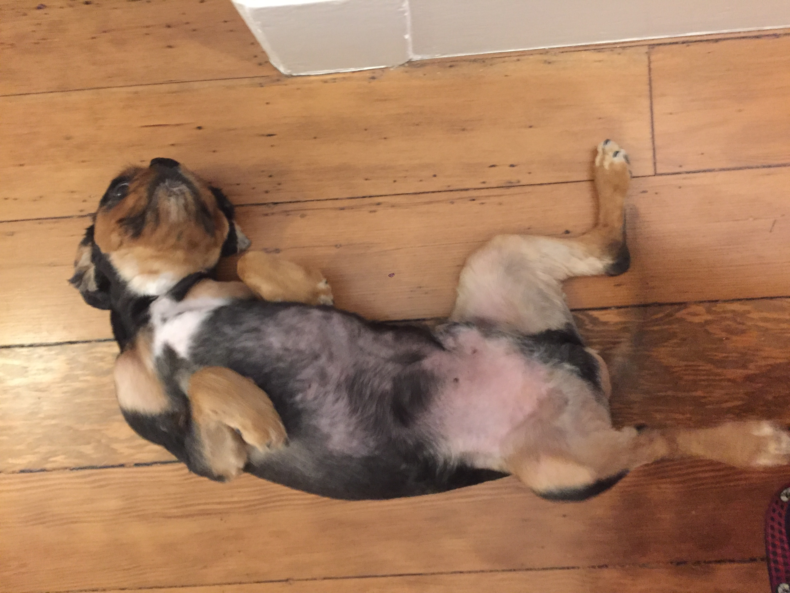
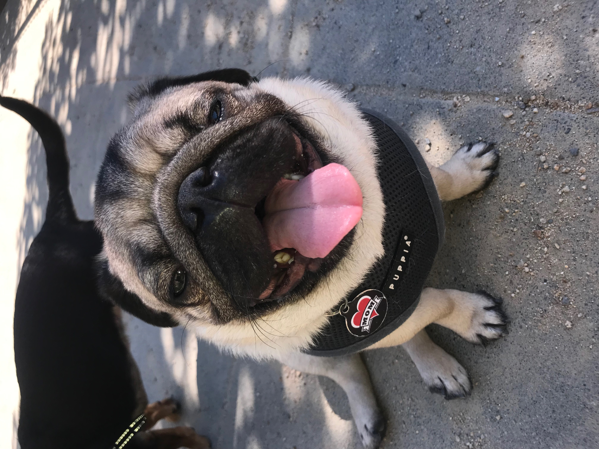

Reviews
-
 DoggieWalks has been so great for us and our dog Tasha! We have been clients of theirs for several years now, and we've mostly been using Nicole and Justin for dog walks. They are all super responsive, repsonsible, trustworthy, and dependable. Tasha always looks forwards to her walks and comes back tired out. Thank you Nicole and Justin for all the amazing walks and for taking such great care of our little girl.
- Nicholas T -
 DoggieWalks is the very best dog walking service you could ever want! I've been with them for years, and they have followed me as I've moved multiple times around the city, worked with my crazy schedule to add night walks when needed and even helped my dog through a serious rehabilitation after her surgery. Their walkers are caring, responsive, and responsible, and their monthly billing is so easy! I'll never use anyone else. Thank you for all that you do!
DoggieWalks is the very best dog walking service you could ever want! I've been with them for years, and they have followed me as I've moved multiple times around the city, worked with my crazy schedule to add night walks when needed and even helped my dog through a serious rehabilitation after her surgery. Their walkers are caring, responsive, and responsible, and their monthly billing is so easy! I'll never use anyone else. Thank you for all that you do!
-Kim S -
 It's been four years since we found DoggieWalks for our little Goldendoodle guy, Charlie. They've been walking Charlie since he was a puppy and at this point we swear he loves Nate, his walker more than us! Nicole, Caroline and the whole DW crew are so thoughtful and attentive to our dood -- we love them so much and fear ever leaving SF because of them. We've even used them for boarding and Charlie was loved and happy as a clam. Can't recommend them enough. Two paws up!
It's been four years since we found DoggieWalks for our little Goldendoodle guy, Charlie. They've been walking Charlie since he was a puppy and at this point we swear he loves Nate, his walker more than us! Nicole, Caroline and the whole DW crew are so thoughtful and attentive to our dood -- we love them so much and fear ever leaving SF because of them. We've even used them for boarding and Charlie was loved and happy as a clam. Can't recommend them enough. Two paws up!
-Cassie V -
 I recently moved from Atlanta to San Francisco. When moving to a new place, one of the most difficult things to find is a really good pet sitter. Luckily I found DoggieWalks! Ercely and Candice have both watched my dog for overnight stays. After staying with a DoggieWalks pet sitter, my dog is always tired out! I get picture and text updates of his adventures. The dog sitters pick him up and drop him off, take him on lots of walks, and most importantly offer a safe, kind environment for my pet. Furthermore it's super easy to schedule boarding/walks. I can't say enough good things about DoggieWalks and the care my pet has received!! Thank you Nicole and team!!
I recently moved from Atlanta to San Francisco. When moving to a new place, one of the most difficult things to find is a really good pet sitter. Luckily I found DoggieWalks! Ercely and Candice have both watched my dog for overnight stays. After staying with a DoggieWalks pet sitter, my dog is always tired out! I get picture and text updates of his adventures. The dog sitters pick him up and drop him off, take him on lots of walks, and most importantly offer a safe, kind environment for my pet. Furthermore it's super easy to schedule boarding/walks. I can't say enough good things about DoggieWalks and the care my pet has received!! Thank you Nicole and team!!
-Jessica L -
 Best dog walkers ever. They are always so happy to see my dog Maisie. I love that Maisie has a crew of other dogs she gets to walk and play with every week. I appreciate the communication they provide when updating me about staff changes. Highly recommend DoggieWalks if you are looking for a service in SF.
Best dog walkers ever. They are always so happy to see my dog Maisie. I love that Maisie has a crew of other dogs she gets to walk and play with every week. I appreciate the communication they provide when updating me about staff changes. Highly recommend DoggieWalks if you are looking for a service in SF.
-Sarah B -
 Doggie Walks has been great with our pug pup! Nicole met our puppy before we settled on a schedule to make sure everything would work out. Shortly after Ana began taking her out on group walks and she has loved it.
-Ian F